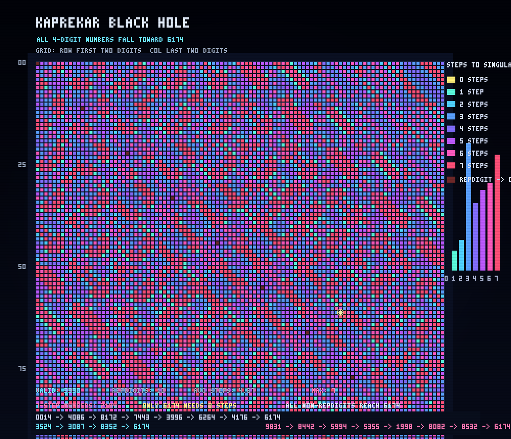

// 假设HYPOTHESIS
对任意一个不是四位同数字的四位数，反复执行“数字降序重排减去升序重排”，真的都会在很短步数内掉进神秘常数 6174 吗？不同起点到黑洞的路径分布，会不会在全体 0000–9999 空间里形成可视化的层级结构？
For any four-digit number that is not a repdigit, if we repeatedly do “descending digits minus ascending digits,” will it really fall into the mysterious constant 6174 in just a few steps? And across the full 0000–9999 space, will the routes to that black hole form a visible layered structure?
// 方法METHOD
遍历 0000 到 9999 的全部四位数组合，对每个数执行 Kaprekar 变换：把四位数补零后分别按降序与升序排列，相减得到下一状态；直到到达 6174，或遇到四位同数字导致的 0000。统计每个起点所需步数，并把 100×100 的数字空间渲染成热力图：行表示前两位，列表示后两位，颜色表示掉进 6174 所需步数；额外高亮 6174 本体并绘制步数直方图。纯 Python、零外部依赖、手写 PNG 编码器。
Enumerate all four-digit states from 0000 to 9999. For each one, apply the Kaprekar transform: zero-pad to four digits, sort digits descending and ascending, subtract, and repeat until reaching 6174 — or 0000 for repdigits. Record the number of steps for every starting point, then render the 100×100 state space as a heatmap: row = first two digits, column = last two digits, color = steps needed to fall into 6174. Also highlight 6174 itself and draw a step-count histogram. Pure Python, zero dependencies, hand-rolled PNG encoder.
// 结果RESULT
成功 ✅ — 全部 10000 个四位状态真实跑完后，9990 个非四位同数字起点无一例外都收敛到 6174，只有 0000、1111、2222…9999 这 10 个“同位数”落入 0000。平均只要 4.67 步，最慢也只需 7 步；而且居然有 2184 个起点要走满 7 步，383 个起点一步直达，6174 自己则是唯一的 0 步终点。最戏剧性的路径之一是 0014 → 4086 → 8172 → 7443 → 3996 → 6264 → 4176 → 6174。一个看起来像小学生竖式游戏的数字操作，竟然在整个四位数宇宙里制造出稳定、可视化、近乎引力井一样的“数字黑洞”。
SUCCESS ✅ — After actually running all 10,000 four-digit states, every one of the 9,990 non-repdigit starts converged to 6174, while only the 10 repdigits (0000, 1111, 2222 … 9999) fell to 0000 instead. The average journey takes just 4.67 steps, the slowest needs only 7, and remarkably 2,184 starting numbers require the full 7 steps. Another 383 reach the black hole in a single move, while 6174 itself is the unique 0-step endpoint. One especially dramatic route is 0014 → 4086 → 8172 → 7443 → 3996 → 6264 → 4176 → 6174. A digit game that looks like elementary-school arithmetic somehow creates a stable, visualizable gravitational well across the entire four-digit universe.
// 产出ARTIFACT

🔍 点击放大Click to enlarge
← 返回实验列表BACK TO EXPERIMENTS